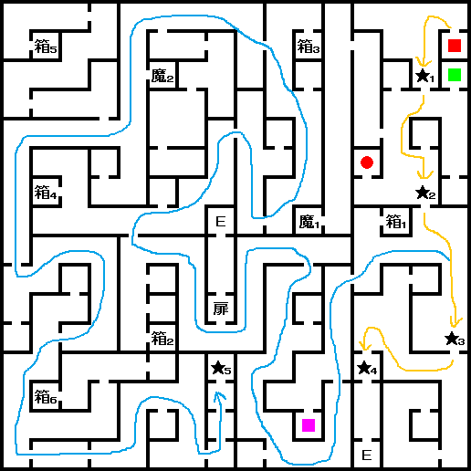

- 발하라 슬럼가
- 발하라~센터 통로
- 旧스이도우바시
- 발하라~센터 통로
- 홀리 타운
- 대교회
발하라 슬럼가
슬럼가의 가이아 신전 뒷방으로 가면, 메카다를 만날 수 있다.
수용소에 잡혀 있는 히로코의 구출 의뢰를 받는다.
이 시점에서 버추얼 배틀을 하면 STEVEN과 만나게 된다. 중마의 스톡 수를 늘려준다.
발하라~센터 통로
통로 서쪽에 길을 막고 있던 남자와 대화하면 旧스이도우바시의 패스코드를 알려준다. 패스코드는 [1213], [1834], [9192]
계속 나아가 아래층으로 내려가면 '발하라 지하통로'이다.
지하통로 B7F에서
BOSS:전사 다레스와 다시 전투가 있다. 쓰러뜨리면 「화성의 필라(火星のピラー)」를 입수.
밖으로 나가서 동쪽에 있는 旧스이도우바시에 들어가자.
旧스이도우바시

- 箱1 : 1600마카
- 箱2 : 지혜의 향
- 箱3 : 체력의 향
- 箱4 : 2080MAG
- 箱5 : 힘의 향
- 箱6 : 속도의 향
- 魔1 : 오닉스
- 魔2 : 오팔
- ★1 : [9192]
- ★2 : [1213]
- ★3 : [1834]
- ★4 : 야누스
- ★5 : 나쟈
- ■(적색) : 출입구
- ■(녹색) : 리페어 가레지
- ■(자색) : 사교의 관
- ●(적색) : 가이아 신전
내부를 진행하면 패스코드를 묻는데, 첫 번째 문은 [9192], 두 번째 문은 [1213], 세 번째 문은 [1834]를 입력하면 된다.
남쪽의 사교의 관 근처의 방에서 메모리 칩을 입수할 수 있다.
중간에 '요정 나쟈'라는 악마를 중마로할 수 있는데, 중마로할 경우
BOSS:요마 야누스와 전투가 불가능해진다. 먼저 야누스를 처리하고 나쟈를 만나서 중마로 하자.
히로코가 있는 수용소에 가는 방법은 두 가지다.
- 旧스이도우바시의 야누스를 쓰러뜨린 장소 근처의 엘레베이터를 타고 1F을 눌러 발굴현장 최하층에 도착. 밖으로 나와서 동쪽의 수용소에 들어간다.
- 야누스를 쓰러뜨리고 나쟈를 만나 중마로 만들면 자동으로 수용소 B1F로 가는 엘레베이터의 철창문 앞으로 이동한다. 안으로 들어가서 수용소 B1F으로 올라간다.
수용소 B1F에서
BOSS:전사 자인과 만나고 전투에 돌입한다. 이후 나쟈가 질문을 하는데 어떤 선택을 택하든지 나쟈와 히로코가 합체한다. (모든 능력치가 +1 된다.)
이후 수용소 밖으로 나와서 서쪽의 '발굴현장 최하층' 건물에 들어가 다시 엘레베이터를 타고 '旧스이도우바시'에 갈 수 있다. 다시 길을 돌아서 '발하라 지하통로'로 향하자.
발하라~센터 통로
발하라 방향으로 나오는 도중 자인을 만나고, 다시 만났던 그 자리를 가면 케르베로스가 나타나 중마가 되어준다.(전에 마담이 케르베로스를 빌려줬을 때 파티에 소환하고 있어야 된다.)
그리고 이제부터 주인공의 마력과 지혜를 10 이상으로 만드는 것을 목표로 성장 시켜야 된다. (나중에 지혜는 감시탑의 진입조건이 된다.)
발하라 쪽은 갈 수 없으니, 센터 쪽으로 나가서 홀리 타운으로 이동하자.
홀리 타운
홀리 타운이 부흥하고 있다. 우선 정크숍에 들어갔다 나오면 「수성의 필라(水星のピラー)」를 입수할 수 있다.
또한 만월일 때, 디스코에 가서 우승을 하면 「달의 필라(月のピラー)」를 입수할 수 있다.(주인공의 마력이 10 이상 필요)
카지노에서 교환 가능한 아이템인 「스마일스테어(スマイルステアー)」는 3000 코인으로 입수가 가능한데 이걸 상점에 10000마카에 팔수 있다.
아무 장소에서 가두TV를 시청하면 화면에 자인이 나와 연설하는 모습을 본 후, 홀리 타운 바(BAR)에 가면 금발 머리의 '루이 사이퍼'가 있다. 대화한 뒤, 대교회로 향하자.
대교회
대교회에서는 1F에 메시아 교회 기부금을 모으고 있다. 기부할 때마다
LAW속성이 증가하니 참고.(현시점에만 가능하다.)
3F에서
BOSS:전사 다레스를 쓰러뜨리고 지하세계로 가는 엘레베이터를 타고 내려가자.